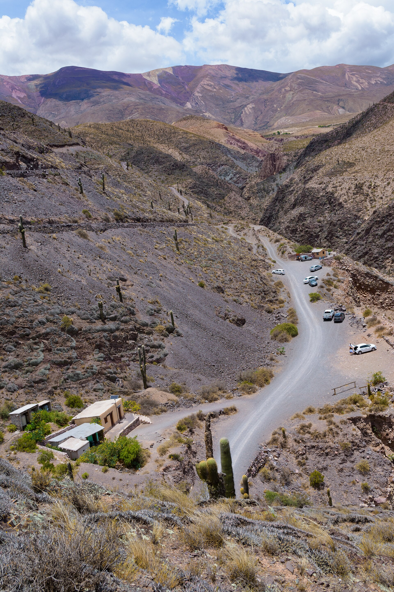
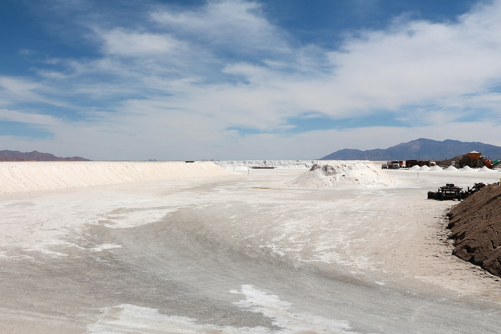
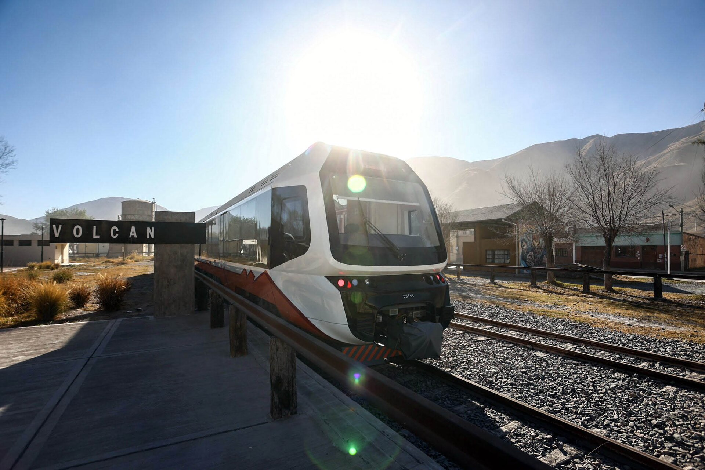

PURMAMARCA · 2.324 M
PURMAMARCA · 2.324 M
Jujuy se recorre despacio, como su gente
Los lugares que se sueñan, los bondis que sí pasan, el día que cierra.
Empezá a imaginar →Cada zona es otro país
Del altiplano a la selva en 100 km. Elegí la que te llama y Yapa te dice cómo llegar.
 La QuebradaHumahuaca, Tilcara, Purmamarca. El paisaje del folleto, por la RN9.155 KM · 2.300–4.350 M
La QuebradaHumahuaca, Tilcara, Purmamarca. El paisaje del folleto, por la RN9.155 KM · 2.300–4.350 M La PunaSalinas Grandes, Susques, vicuñas. Aire fino, cielo enorme.4.000 M · ALTIPLANO
La PunaSalinas Grandes, Susques, vicuñas. Aire fino, cielo enorme.4.000 M · ALTIPLANO Las YungasCalilegua, selva de niebla, cataratas. El Jujuy verde.SELVA · NEBLINAS
Las YungasCalilegua, selva de niebla, cataratas. El Jujuy verde.SELVA · NEBLINAS Los VallesTermas de Reyes, San Salvador, San Lorenzo. Aguas, historia, ciudad.1.200 M · TERMAS
Los VallesTermas de Reyes, San Salvador, San Lorenzo. Aguas, historia, ciudad.1.200 M · TERMASLos lugares que se cuentan
Cada uno con su dato honesto: cuánto toma, cómo se llega, cuándo conviene.
Vista desde el pueblo o por el Paseo de los Colorados, 40 min caminando.

Cañón de 8 km hasta la cascada. A pie o en bici desde el centro.
El cerro más fotografiado del norte. Solo con vehículo — combi desde la plaza.

Espejo de sal por la Cuesta de Lipán, desde Purmamarca.

Tren histórico por el valle. Hay combi que frena en la estación.
Selva tupida, senderos, yaguareté si tenés suerte.
Base de operaciones
Tilcara y Purmamarca son las bases más cómodas sin auto — todo sale de la ruta.


Los que conocen el cerro
Registro Provincial de Guías (Ley 6.308) — los 96 habilitados, por zona y especialidad.
El plan que respeta el reloj del colectivo
Cada atracción trae su forma de llegar: qué línea, desde qué parada, a qué hora vuelve la última. Si el plan no cierra, te avisamos antes de que estés en la ruta, no después.
- 9:40🚌 Línea 3 sentido Humahuaca~horario publicado
- 10:45⛰ Hornocal · combi local de la plazaúltima 15:00
- 17:10🚌 vuelta a Tilcaraúltimo bondi 17:40
- —⚠ No cierra → te proponemos el bondi de las 8:00
“Un viaje no es una sucesión de visitas: es la historia que contás cuando volvés.”